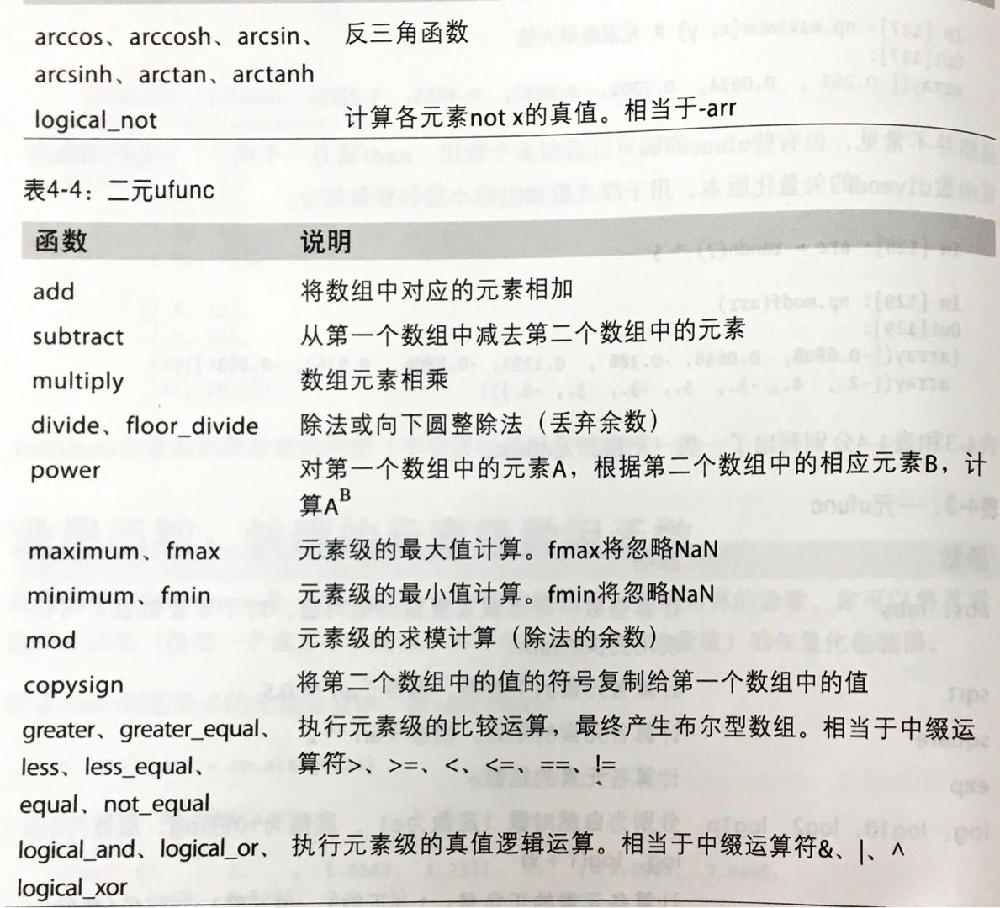
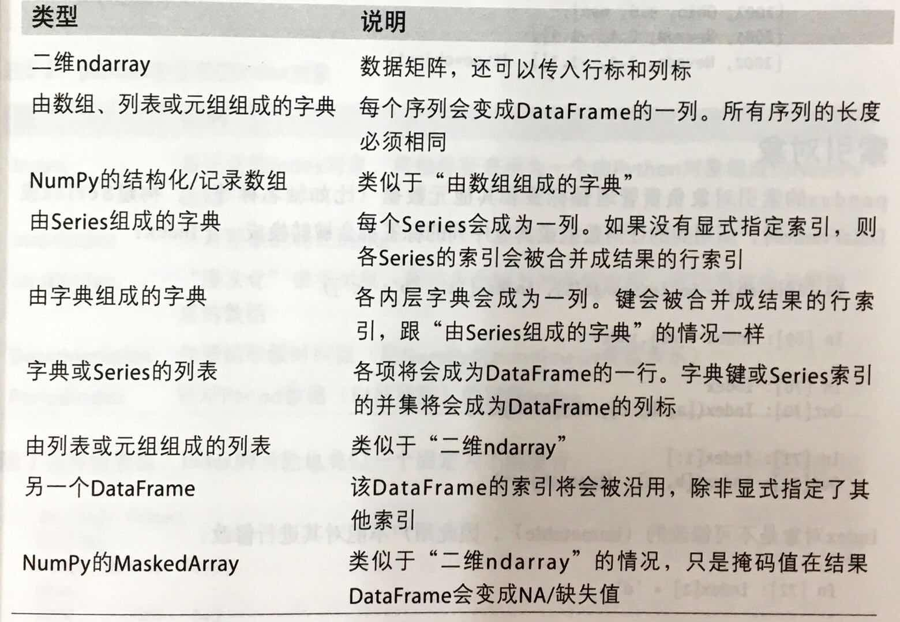

这是阅读《Python for Data Analysis》的读书笔记。
第一章 准备工作
不用准备了。🙂🙂🙂要啥有啥。
第二章 引言
list 手动统计
from collections improt defaultdict
def get_count(sequence):
counts = defaultdict(int)
for x in sequence:
counts[x] += 1
return counts
本章内容仅仅是向读者展示。跳~
第三章 IPython
目前使用的IDE是Spyder，是集成了IPython的。值得一学。
内省
变量前后加? 可查看该对象的通用信息
a? Type: int String form: 10 Docstring: int(x=0) -> integer int(x, base=10) -> integer
- 如果对象是一个函数或实例方法。其docstring会被显示
- ?? 还将显示出该对象的源码
搜索IPython命名空间
np.*load*? #列出NumPy顶级命名空间中含有“load”的所有函数 np.load np.loads np.loadtxt no.pkgload
%run
%run filename.py #运行这个文件
文件在一个空的命名空间中运行。此后该文件定义的全部变量就可以在IPython Shell中访问了。
Note
访问 Interactive 命名空间的变量：%run -i
中断执行的代码
Ctrl + C
执行剪贴板中的代码
%paster
执行后，剪贴板中的一切文本，在shell中以整体的形式执行。%cpaste
执行后，你想粘贴多少就粘贴多少。按下Ctrl + C终止%cpaste
键盘快捷键
我是个没有快捷键会死星人。
记几个常用的吧：
| Ctrl+ | 说明 |
| –: | :-: |
| A | 光标至行首 |
| E | 光标至行尾 |
| K | 从光标往后全删 |
| U | 从光标往前全删 |
| L | 清屏 |
魔术命令
魔术命令是以百分号为前缀的命令
常用
| 命令 | 说明 |
|---|---|
| %quickref | 显示IPython快速参考 |
| %magic | 显示所有magic文档 |
| %debug | |
| %hist | 历史 |
| %paste %cpaste | |
| %reset | 删除interactive命名空间中的全部变量/名称 |
| %run script.py | 执行脚本文件script.py |
| %time statement | 报告statement的执行时间 |
| %timeit statement | 多次执行statement返回平均执行时间 |
| %who %who_Is %whos | 显示interactive命名空间中定义的变量 |
命令历史
上下键能一个个切换Ctrl + P/N能根据你输入向前/后匹配历史
输入输出变量
_和__分别是最后两个输出
输入变量：
第27行的输入：_i27
%hist 显示全部或部分输入输出历史，并可选是否带行号
与OS交互
自认为还用不到。调用os Shell ，目录书签。以后研读。
软件开发工具
本章就这样了。快快开始学干货吧~
第四章 Numpy
ndarray
创建
| 函数 | 说明 |
|---|---|
| array | 将输入数据(list,tuple,etc)转为ndarry |
| asarray | 与array区别：当输入是个ndarry时，不进行复制 |
| arange | 不解释 |
| ones\ones_like | 全1。ones可设shape。而ones_like是传入一个数组a，生成的数组与其同shape。 |
| zeros\zeros_like | 同上 |
| empty\empty_like | 不解释 |
| eye\identity | NxN单位矩阵（对角1，其余0） |
array和asarray区别：都可以将结构数据转化为ndarray，但是主要区别就是当数据源是ndarray时，array仍然会copy出一个副本，占用新的内存，但asarray不会。
索引和切片
- 数组切片是原是数组的视图。这意味着：这些数据不是被复制的，视图上的任何修改都会被直接反映到原数组上。
（我虽然改的是切片，但其实原数组也改了） - 如果你想得到的是副本也不是视图。要显式复制：
arr[5:8].copy()
布尔型索引
arrary = ([True,False,True],dtype = bool)
data[arrary] #输出第1、3行
#还可以与切片混用
data[arrary,:2] #输出1、3行的前两列
#索引还可以同时满足多个条件
mask = (names == 'Bob') | (names != 'Will') #mask就是一个bool型数组
花式索引
arr[[4,0,6]] # 输出第5、1、7行
arr[[-1,-5]] # 输出倒数1、5行
arr[[1,5,4],[0,2,1]] #输出坐标(1,0) (5,3)(4,1)三个数
#那如何利用索引输出该行列呢
#要用切片配合
arr[[1,5,4],[:,0,2,1]] #输出1、5、4行的0、2、1列
Note 花式索引跟切片不一样。不是视图是复制。
转置
转置返回的是视图
通用函数
ufuns(元素级数组方法)
函数abs、fabs
计算整数、浮点数或复数的绝对值。对于非复数值,可以使用更快的fabssgrt
计算各元素的平方根。相当于arr 0.5square
计算各元素的平方。相当于arr 2exp
计算各元素的指数elog、log10、log2、log1p
分别为自然对数(底数为e)、底数为10的log、底数为2的log、log(1+x)sign
计算各元素的正负号:1(正数)、0(零)1(负数)ceil
计算各元素的 ceiling值,即大于等于该值的最小整数floor
计算各元素的for值,即小于等于该值的最大整数rint
将各元素值四舍五入到最接近的整数,保留 dtypemodf
将数组的小数和整数部分以两个独立数组的形式返回isnan
返回一个表示“哪些值是NaN(这不是一个数字)”的布尔型数组isfinite、 isinf
分别返回一个表示“哪些元素是有穷的(非inf,feiNaN)”或“哪些元素是无穷的”的布尔型数组cos、cosh、sin、Sinh、tan、tanh
普通型和双曲型三角函数

将条件逻辑表述为数组运算
np.where
result = [(x if c else y) for x,y,c in zip(xarr,yarr,cond)]
#对大数组不快。无法用于多维数组。不如直接用where
resul = np.where(cond,xarr,yarr)
#将正值设为2
np.where(arr>0,2,arr)
基本数组统计方法
有个axis参数。横着是1 竖着是0
sum求和
mean平均数
std、var标准差方差
min\max
argmin\argmax 最大、小值的索引
cumsum 所有元素累积和
cumprod 所有元素累计积
这两个函数还会产生中间结果
Ex：
import numpy as np
arr = np.arange(0,9).reshape(3,3)
print(arr)
[[0 1 2]
[3 4 5]
[6 7 8]]
print(arr.cumsum(0)) #竖着加
[[ 0 1 2]
[ 3 5 7]
[ 9 12 15]]
print(arr.cumprod(1)) #横着乘
[[ 0 0 0]
[ 3 12 60]
[ 6 42 336]]
集合
unique(x)
计算x中的唯一元素,并返回有序结果intersected(x, y)
计算x和y中的公共元素,并返回有序结果
unionid(x, y)
计算x和y的并集,并返回有序结果in 1d(x, y)
得到一个表示“x的元素是否包含于y”的布尔型数组setdiff1d(x, y)
集合的差,即元素在x中且不在y中setxor1d(x, y)
集合的对称差,即存在于一个数组中但不同时存在于两个数组中的元素
文件输入输出
arr = np.arrange(10)
np.save('some_array',arr) # 被存为.npy文件
np.load('a.npy') #读取
arch = np.savez('archive.npz',a=arr, b=arr) #多个数组压缩至一个npz文件
#加载时会对各个数组进行延迟加载
arch['b'] #可单独访问
线代
diag
以一维数组的形式返回方阵的对角线(或非对角线)元素,或将一维数组转换为方阵(非对角线元素为0)dot
矩阵乘法trace
计算对角线元素的和det
计算矩阵行列式eig
计算方阵的本征值和本征向量inv
计算方阵的逆pinv
计算矩阵的 Moore- Penrose伪逆qr
计算QR分解svd
计算奇异值分解(SVD)solve
解线性方程组AX=b,其中A为一个方阵lstsq
计算Ax=b的最小二乘解
随机数
seed
确定随机数生成器的种子permutation
返回一个序列的随机排列或返回一个随机排列的范围shuffle对一个序列就地随机排列rand
产生均匀分布的样本值randint
从给定的上下限范围内随机选取整数randn
产生正态分布(平均值为0,标准差为1)的样本值,类似于 MATLAB接口binomial
产生二项分布的样本值nomal
产生正态(高斯)分布的样本值beta
产生Beta分布的样本值chisquare\gamma\uniform卡方、Gamma、01分布
范例
例子不错。而然我并不想记。不错不错第四章结束~喜大普奔迎接pandas
第五章 pandas
数据结构
Series
一维数组对象。
（可传入字典建立，就像把字典列成表）在算数运算中会自动对齐不同索引的数据。
Series对象本身和其索引都有一个name属性。
就等于这个表有个名obj.name。索引有个名obj.index.name。
DataFrame
- 通过索引返回的列是视图
创建方法

P123表待插入
索引对象
- Index对象是不可修改的
基本功能
重新索引
obj.reindex([index],#新索引
method,#差插值填充方式：=ffill/pad 向前填充 =bfill/backfill向后填充
fill_vaule，#缺失值填充
limit,#向前、后填充时的最大填充量
level,#没看懂
copy#默认True，无论如何都复制。设为FALSE则新旧相等就不复制了)
丢弃
obj.drop(['d','c'])obj.drop(['1','3'],axis=1)竖着丢
drop方法返回的是一个在指定轴上删除了指定值的新对象：new_obj = obj.drop('c')
索引选取过滤
obj['a':'c'] 这是根据列名来 选取（过滤）列
与Python切片不同的是c是包含的。obj.ix[val] 这是根据行名来选取行。obj.ix[:,val] 选取列
从例子和选取方法上看，我认为使用之前还是用demo调试着进行选取吧。有点乱~
算数运算和数据对齐
不重叠的索引引入NA值
DataFrame 和 Series 之间的运算
将Series的索引匹配到DataFrame的列。然后沿着行一直向下广播。
如果想匹配行且在列上广播。则必须使用算数方法：
a.sub(series,axis=0)
函数应用和映射
NumPy的ufuncs也可用于操作pandas对象
DataFrame的apply方法可以：将函数应用到各行或各列的一维数组上。
排序和排名
sort_index方法可以按索引（字典序）排序。
到此为止吧。数据分析。有缘再见！